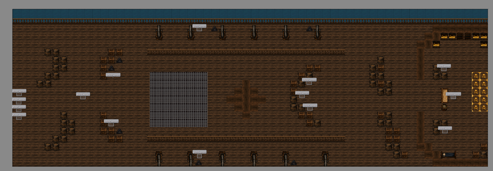
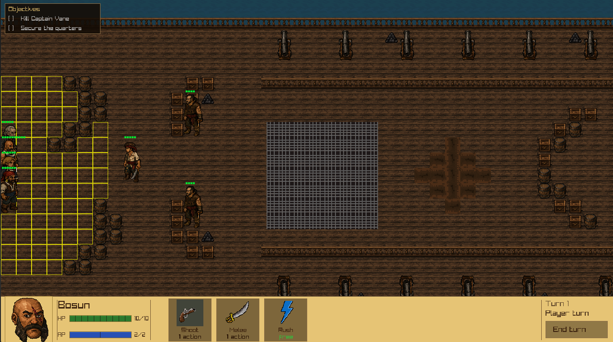
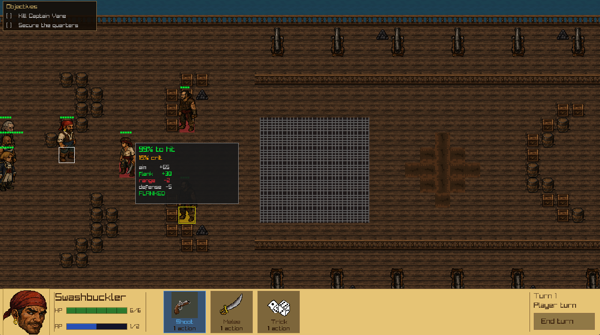

A pirate-themed tactical combat game with grid-based squad tactics with real cover, flanking, and line-of-sight. Its built from scratch in C++ and I created all of the assets with libresprite.

Levels are authored in Tiled. This is the mutiny map with named spawn points (player_spawn, guard_spawn, soldier_spawn, captain_spawn) placed directly on the tilemap. The engine reads these labels at load time to place the squad and populate enemies, so building a new mission is a level-editing task, not a recompile.

Turn 1 of the Mutiny mission. The yellow grid shows every tile the Bosun can reach this turn, and the bottom bar shows his state: 10/10 HP, 2/2 action points, and three available abilities (Shoot, Melee, and a free Rush) each of the four squadmembers has their own unique ability, one has a aimed shot for more damage, one applies an aim debuff, and the other heals.

The actual odds calculation, surfaced to the player rather than hidden: a 99% chance to hit with 15% crit, broken down into aim (+65), a flanking bonus (+30) because the target has no cover on this side, a range penalty (-2), and the target's defense (-5). The target is explicitly marked FLANKED.
The core loop is an XCOM-style squad tactics system: each unit takes actions on a grid with real line-of-sight raycasting, a cover system that reduces hit chance based on terrain, and flanking detection that removes cover bonuses and grants an aim bonus when a target is attacked from an open side.
Currently there are 4 classes (Bosun, Sharpshooter, Medic, and Swashbuckler) and 3 enemy types (Soldier, Guard, and Captain). Each carry distinct movement, HP, aim, defense, and range stats. Abilities include Shoot, Melee, Aimed Shot, Heal, Rush, and a aim debuff called Dirty Trick, several with cooldowns.
Enemy AI isn't scripted per-encounter, the enemies each run their own decision logic, actively pathing to cover, finding flanking positions, and choosing when to hold cover rather than advance blindly.